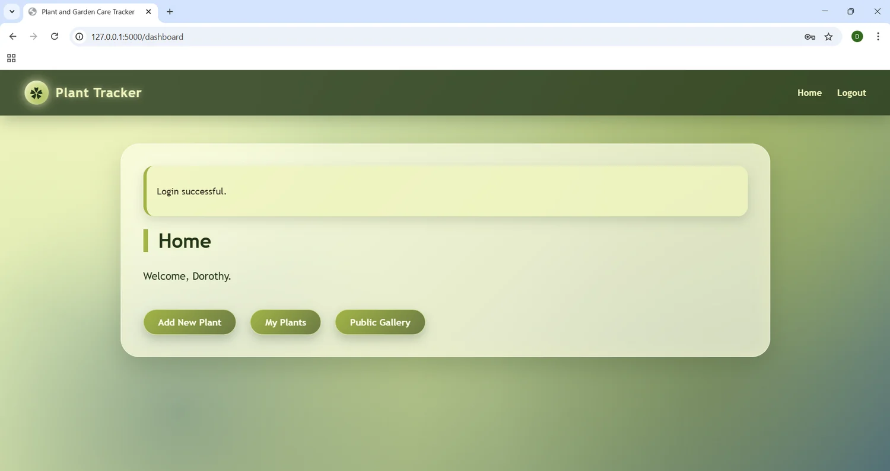
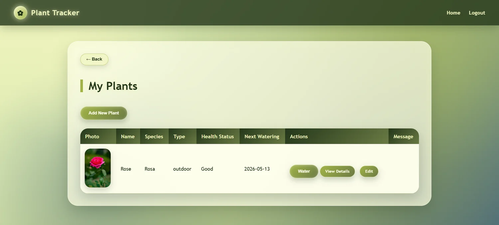
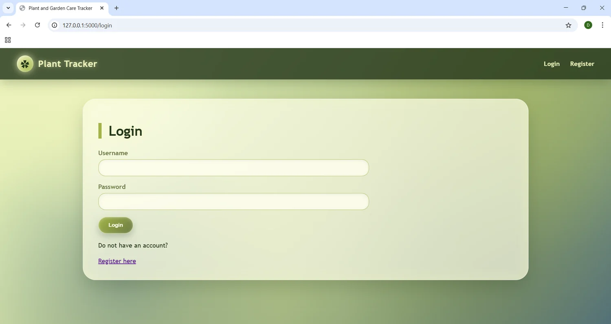
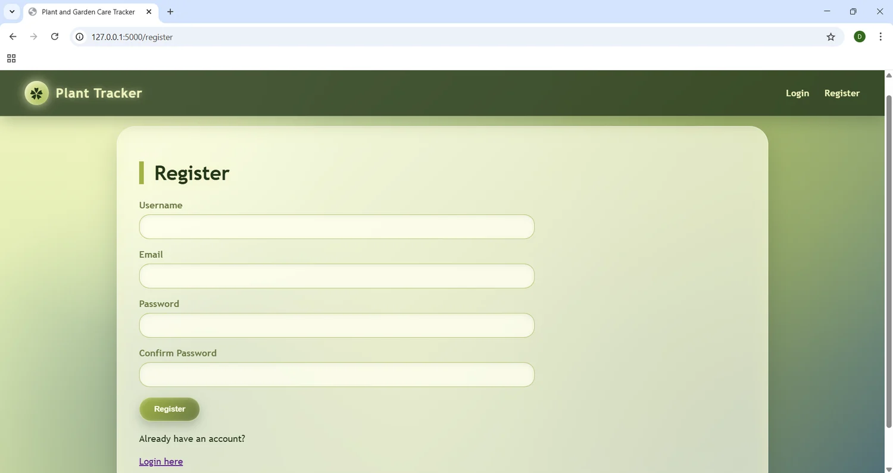
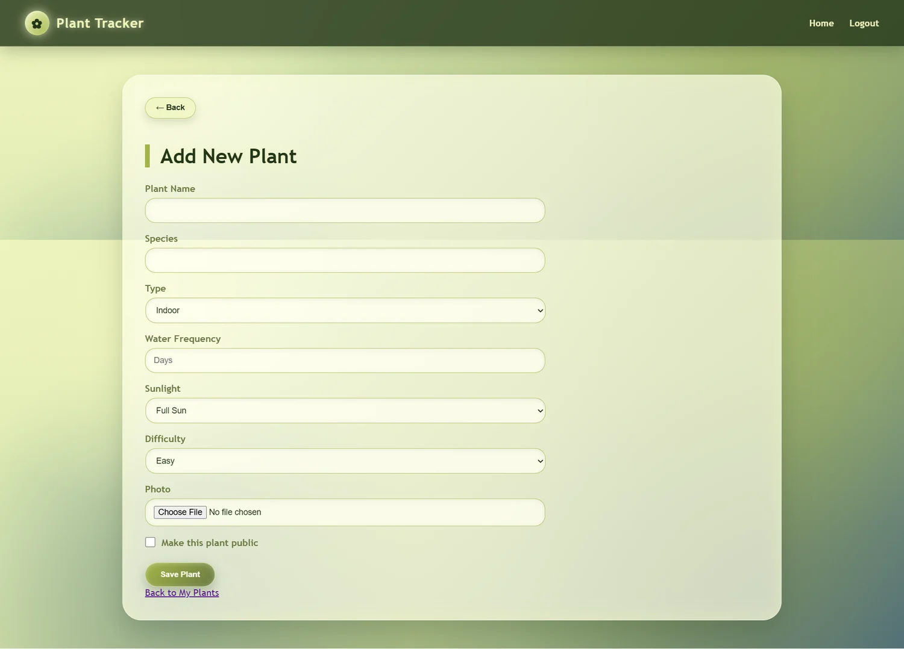
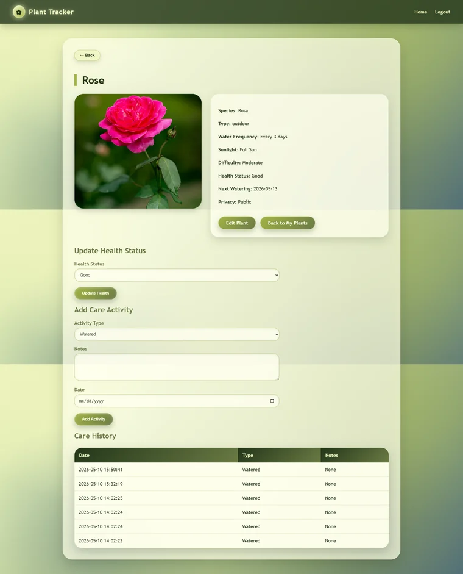
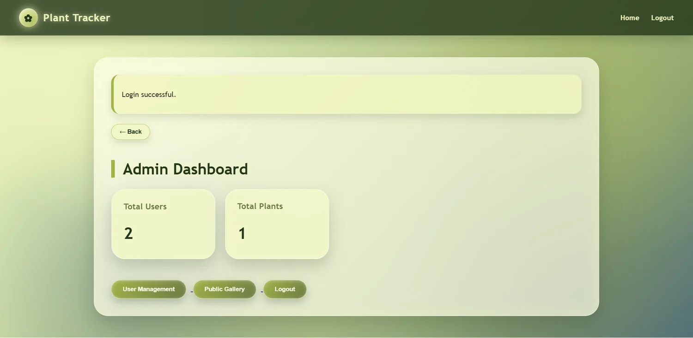
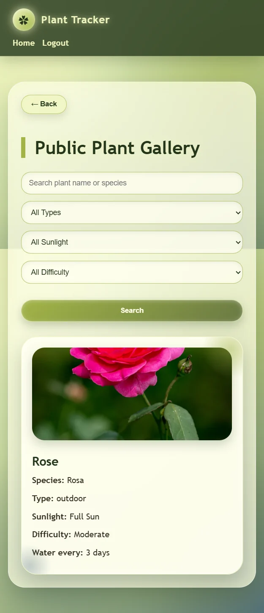

该项目是一个完整的 Web App，包含普通用户端与管理员端。用户可以创建植物档案、设置浇水频率、上传图片、记录护理活动，并选择是否公开展示自己的植物。
页面设计以绿色和自然感为主，强调清晰的信息卡片、明确的操作按钮和易读的表单结构，适合展示全栈开发与产品界面实现能力。
一个植物养护管理网站，支持用户注册登录、添加植物、记录浇水与养护活动、浏览公共植物图库，并提供管理员后台管理功能。


Project Overview
Plant Tracker 面向需要管理多盆植物的用户，核心目标是让植物信息、浇水日期和养护记录集中在一个清晰的系统中。
该项目是一个完整的 Web App，包含普通用户端与管理员端。用户可以创建植物档案、设置浇水频率、上传图片、记录护理活动，并选择是否公开展示自己的植物。
页面设计以绿色和自然感为主，强调清晰的信息卡片、明确的操作按钮和易读的表单结构，适合展示全栈开发与产品界面实现能力。
Key Features
项目功能覆盖用户账户、植物管理、养护记录、公共展示和后台管理。
支持注册、登录、登出，并根据角色区分普通用户和管理员入口。
用户可以添加、编辑和查看植物信息，包括品种、光照、难度和照片。
根据浇水频率自动更新下次浇水日期，并保留护理活动记录。
公开植物可展示在 Gallery 页面，并支持按名称、类型、光照和难度筛选。
管理员可以查看用户与植物统计，并管理用户状态。
页面适配桌面端和移动端，保证不同设备下都能正常浏览和操作。
Interface Design
通过关键页面展示产品流程：从登录注册、管理植物，到查看详情与后台管理。

用户登录入口，表单结构简洁清晰。

新用户注册页面，包含基础表单校验流程。
集中展示用户自己的植物列表和状态信息。

用于创建植物档案，支持上传图片和设置养护属性。

展示植物详细信息、护理活动和健康状态更新。

管理员查看系统统计并进入用户管理页面。
Responsive Design
同一套功能在移动端保持可读性和可操作性，适合在作品集中体现响应式设计能力。

移动端布局保留了主要导航、卡片和按钮操作，让用户可以在小屏幕上查看植物信息与完成关键操作。
Process
围绕注册登录、添加植物、查看详情和记录护理活动建立完整使用路径。
用用户、植物和护理活动三个核心数据表支撑植物管理和记录功能。
通过表单提交与 AJAX 请求完成植物浇水、筛选和后台用户管理等操作。
Technical Stack
项目使用 Flask 构建后端路由和页面渲染，MySQL 管理数据，并结合 HTML、CSS 和 JavaScript 完成界面交互。
这个项目展示了全栈 Web 开发中的常见能力：用户认证、数据库 CRUD、角色权限、文件上传、异步请求、过滤查询、响应式页面和基础后台管理。
Reflection
一个好的管理系统，应该让信息更清楚，让日常操作更容易坚持。
通过 Plant Tracker，我练习了从数据库设计、后端路由到前端页面展示的一整套开发流程。
未来可以增加邮件提醒、日历视图、植物成长照片时间线和更完善的数据可视化。
相比单纯 UI 展示，这个项目更适合体现全栈能力和真实 Web App 的功能完整度。